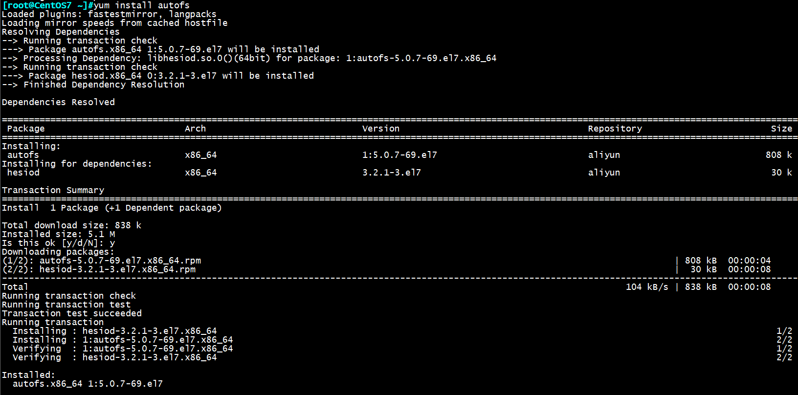
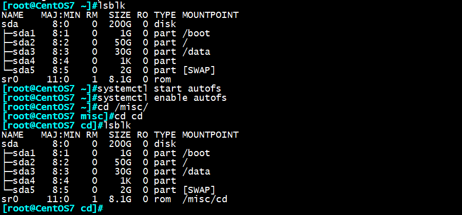
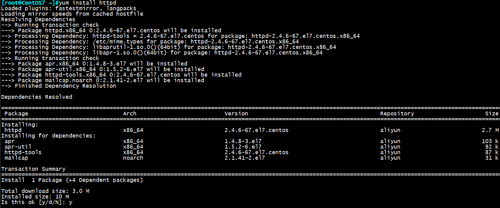
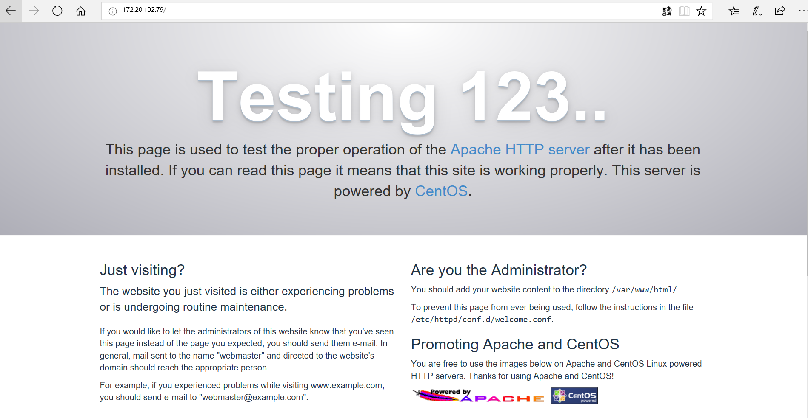
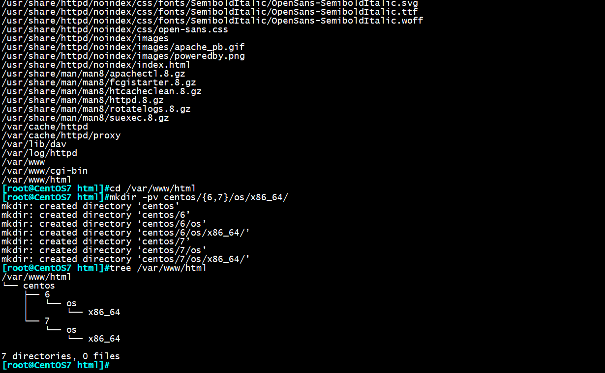
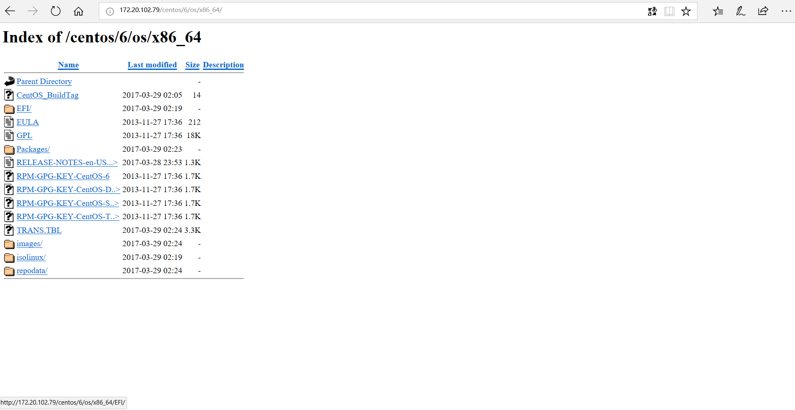
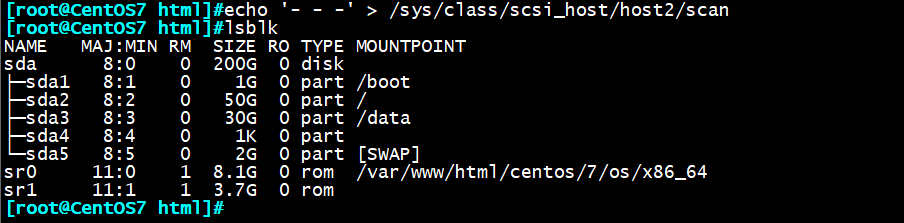
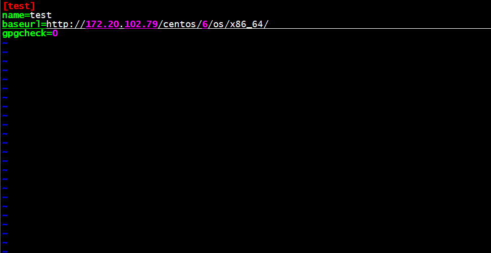
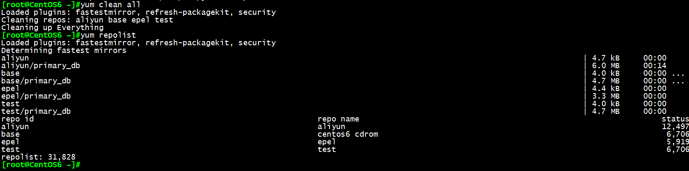

一、前期准备
准备两台Linux服务器，本文所用的服务器为CentOS6.9，及CentOS7.4服务器各一台，将演示CentOS7服
务器作为yum源服务器，用CentOS6服务器进行yum访问。
二、开启CentOS7自动挂载光盘服务
我们知道在CentOS6版本系统中，有一个“神奇”的目录/misc可实现光盘的自动挂载，但在CentOS7版本中
默认并不支持此服务，需要我们进行手动安装autofs服务
yum install autofs 安装autofs包
systemctl start autofs 开启自动挂载
systemctl enable autofs 下次开机默认开启自动挂载


三、关闭防火墙
要注意CentOS6版本与CentOS7版本关闭防火墙的命令有所不同：
CentOS6：
service iptables stop 关闭防火墙
chkconfig iptables off 下次启动时自动关闭防火墙
CentOS7：
systemctl stop firewalld 关闭防火墙
systemctl disable firewalld 下次启动时自动关闭防火墙
四、安装httpd服务
yum install httpd

五、开启httpd服务
service httpd start
将本机ip地址输入浏览器，不出意外就能访问我们搭建的测试页面啦！

六、创建网页目录
打开httpd包的文件列表，我们看到/var/www/html的文件夹，这里就是存放网页内容的目录了
rpm -ql httpd 查看httpd包的文件列表
cd /var/www/html 进入html目录
mkdir -pv centos/{6,7}/os/x86_64/ 创建挂载6，7yum源的目录

七、挂载yum源
mount /dev/sr0 /var/www/centos/7/os/x86_64/ 将6光盘挂载至6网络下
mount /dev/sr1 /var/www/centos/6/os/x86_64/ 将7光盘挂载至7目录下
此时，在浏览器输入：ipadress/centos/版本号/os/x86_64/ 就能看到我们挂载的yum源了

注：echo ‘- – -‘ > /sys/class/scsi_host/host0/scan 热添加光盘时识别光盘

八、在CentOS搭建yum仓库
[test] 仓库名
name=test 描述名，不设置不影响包的安装，但会报错
baseurl=http://172.20.102.79/centos/6/os/x86_64/ 设置仓库地址链接
gpgcheck=0 默认为1，表示数字密钥安全检查，0表示不进行安全检查

九、更新yum仓库
yum clean all 清空全部yum缓存
yum repolist 显示yum仓库列表
此时我们看到test仓库下已经更新出有6706个包列表，现在我们就可以通过自己搭建的yum源服务器来安装
程序包了！
